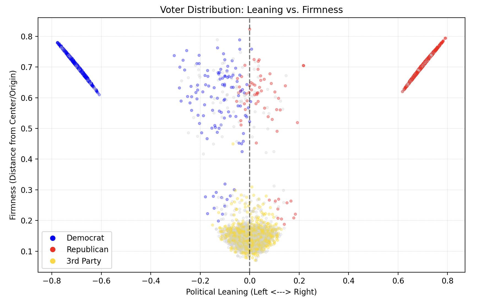

Two-Party Voter Simulation
The voterSim.py script serves as the baseline for my research, simulating a standard US two-party election using a 10-dimensional ideology space. Voters are generated into four distinct categories—Democrat, Republican, Center, and Cross—with distribution ratios modeled after Pew Research data. Each dimension represents a key policy area, allowing for a more realistic representation of "cross-pressured" voters than a simple left-right spectrum.
This model measures effectiveness through a "happiness" vs. "alienation" metric, which calculates the distance between a voter's unique 10D coordinate and the party they ultimately support. By running hundreds of trials, the simulation identifies the baseline levels of representative friction inherent in a rigid two-party system.
The results showed a predictably narrow divide between the two major parties, with wins often decided by minor fluctuations in turnout noise. However, the "totalHappiness" metric revealed that while a party may win the majority, a significant portion of the electorate remains deeply alienated. This suggests that the two-party system wins by consolidation rather than true representation.
Third-Party Dynamics
Building on the baseline, voterThirdPartySim.py introduces an adaptive third party that starts at a neutral origin ([0]*10). Unlike the fixed positions of the major parties, the third party shifts its platform each election cycle based on the average ideology of the voters it manages to capture. It’s an exploration of whether an "evolutionary" party can break the duopoly.
The simulation accounts for the "fear factor"—where voters might prefer a third party but fear "wasting" their vote—and a "Trump effect" variable. The latter models how high polarization increases turnout for the base while potentially squeezing the space available for a centrist alternative.
Negative partisanship is a core mechanic here, modeled with the formula distDem -= (repExtreme * 0.4). Conceptually, this means voters aren't just pulled toward a party because they like it; they are pushed toward it because they fear the opposition. If the Republicans move further right, Democrats don't have to move closer to the center to keep their voters—the fear of the "extreme" opposition does the work for them.

After 100 elections, the third party’s ideology usually evolved to settle in the gap between the two giants. While its win count remained low due to the negative partisanship "penalty," its existence consistently improved the aggregate representation of centrist voters. The data shows that the third party acts as a vital ideological "safety valve," even if it doesn't take the White House.
Multi-Party Optimal Count Model
This is the most robust simulation in the suite, testing party counts from 2 all the way to 20. Parties are spread across the ideological spectrum with a position noise variable (epsilon) to prevent "perfect" placement. The model follows a rigorous structure: 50 trials, each containing 200 elections with 2,000 unique voters per election, ensuring the results are statistically significant and not just outliers.
The primary metric used is "collective alienation"—the average Euclidean distance in 10D space between every voter and the winning party. It is a powerful measure of democratic health; a lower number means the government's position is actually close to the people's position. In short, it’s a mathematical way of asking: "How well does the winner represent everyone?"
The simulation returned a striking result: **3 parties is the optimal number.** As seen in the results table, moving from 2 to 3 parties provides the biggest drop in alienation (over 0.1 length). Interestingly, adding more than 3 parties causes the metric to worsen. This is likely due to "fragmentation noise," where too many choices split the vote so thinly that the winner represents a smaller and smaller ideological slice of the population.
Multi-Party Example Simulation
The voterMultiPartyExample.py script was built to explore the "what-ifs" of multi-party systems more granularly. It demonstrates how different party configurations—each with their own turnout boosts and issue weights—interact. I used this to specifically look at the margin of victory and how the "average difference" between the top two parties changes as the system grows more crowded, further supporting the finding that 3 parties provide the best balance of competition and stability.